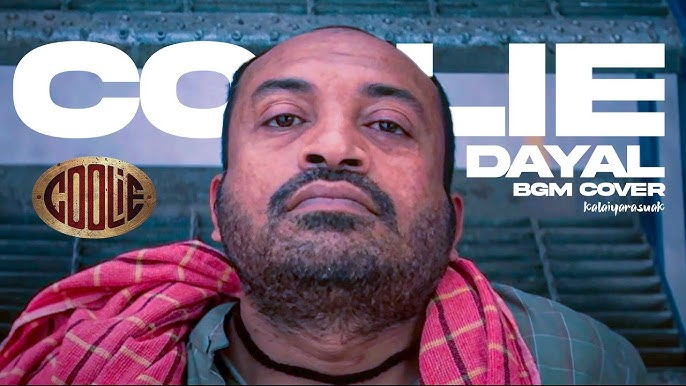

Dayal
The most notorious character in this movie. Who kills Rajasekar and he is the one mole who tried to cheat Simon and Deva through his jackal moves. He is the one who came as Police informer and at last who converts into a notorious character. But he is an energetic performer who steals this show.

Kalyani
The most dangerous character in this movie who is the wife of Dayal by joining his company through police informer but as late she became a incharge of kingpin group by doing a cheating relationship to Arjun (Custom Officer). Atlast, she was killed by Kingpin.

Preethi
The Daughter of Rajasekar but actual daughter of Deva. Who aspires to become a doctor but she sacrifices her life for her father's research and her 2 sisters. She helped Deva for her finding "Who Killed her Father?"